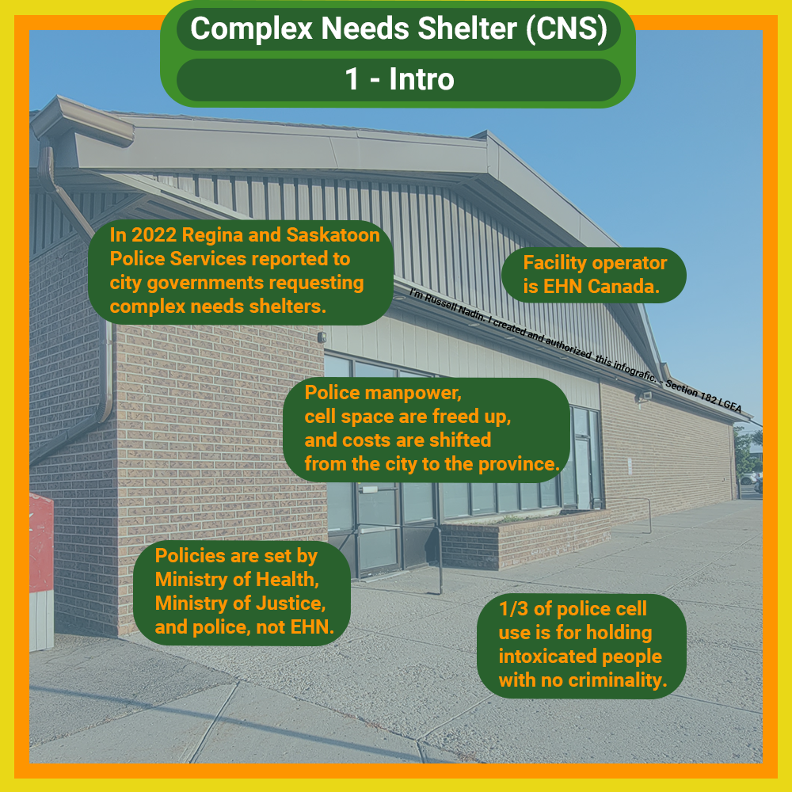
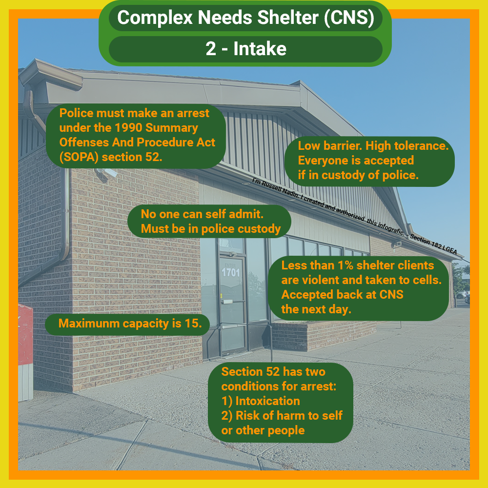
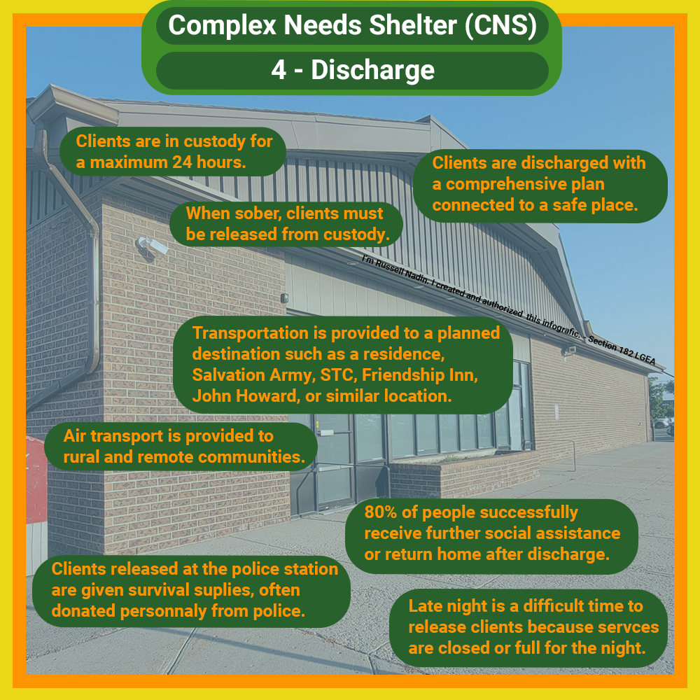
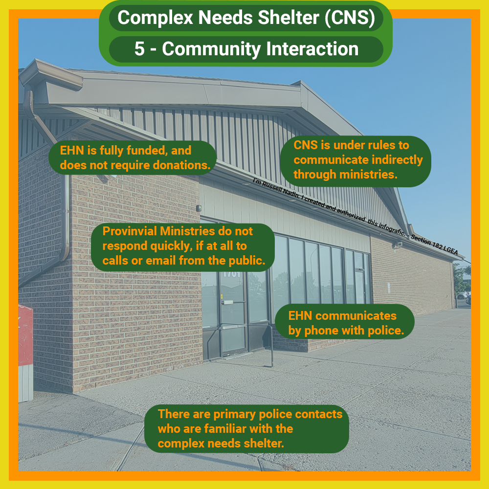

Vision for Saskatoon
I love Saskatoon and want this to be an awesome city for everyone. Council must address homelessness, transit, road maintenance, violent crime, indigenous reconciliation, and it MUST be done within budget and community consultation. I will work so we can have a beautiful, functioning city.
About Russell Nadin
- Happy resident of Saskatoon and married for 15 years with kids.
- Self-employed electrical contractor for 6 years because I love meeting people, troubleshooting, and repairing.
- Volunteers for several churches with events, community clean-ups, tech.
- Team lead with Sage Clan providing aid to ALL unhoused folk. (judgement-free)
Education / Certification
- Power Engineer (Keyano College)
- Electrician for 14 years (SaskPoly)
- Accounting for small business (SaskPoly)
- Contract law for small business (SaskPoly)
- P.A.L. (firearms)
- Class 1A drivers license
- First Aid
Unhoused / Homeless
Q: How will you address Saskatoon’s unhoused / homeless population?
A: The Lighthouse is in receivership, the 30 bed shelter in Sutherland quashed, tensions rise between STC’s shelter in Fairhaven and local residents, and Saskatoon’s unhoused / homeless population has increased into the thousands - we must act now.
Council must pressure the province to fulfill its responsibilities of housing and social services for Saskatoon citizens, properly consult residents, and follow up with shelters to meet our expectations.
It’s time ALL members of council close the distance between themselves and Saskatoon’s unhoused people.
Click on the images below to zoom.

![Infographic outlining the care process at CNS. Clients are in custody and can freely roam within the shelter but cannot leave until sober. In-house professional security undergoes trauma-informed, culturally aware training. Clients receive food, clothes, laundry, shower, toilet, and bed. In-house nurses provide medical care and psychological assessments. Repeat clients gain trust with EHN and join the Managed Alcohol Program (MAP). Without health cards, prescriptions may not be filled, creating a service gap.](CNSInfografic3.png)


I have toured and talked with Saskatoon’s shelters and many social outreach organizations with the goal of understanding the processes and supporting or improving if possible.
I will continue to patrol Saskatoon’s streets with Saskatoon Sage Clan, and be physically present and active where unhoused folk need assistance.
Outreach groups are vital to providing aid and increasing safety.
Communication
Q: How will communication be improved compared to the existing council?
A: 1) I’m active and accessible on social media (Facebook, Reddit, Twitter / X, YouTube, Instagram)
2) Online summaries of council meetings to provide you with up-to-date information.
3) Messages returned within hours, not weeks.
4) Travel in person to understand issues and speak with residents involved.
5) Monthly in-person coffee community meetings.
6) Vote down and speak against council and committee meetings closed to the public. (in-camera)
7) Push for better communication from the City of Saskatoon to residents affected by neighborhood changes.
Economic Development
Q: What policies do you think might help spur development of vacant and underutilized properties?
A: Occupied buildings bring in more tax revenue than vacant lots while also providing people a necessary place to live or work. I support deadlines with steep fines for absentee landowners that allow properties in our city to become uninhabitable for people and overgrown with weeds and pests.
Q: Given the housing crisis, what can be done to improve housing affordability? What policies might spur faster and more affordable housing production?
A: 1) Ensuring vacant residential properties are built into functioning homes will add to the housing supply and encourage stable market costs.
2) Eliminate as much red tape and bureaucracy for homebuilders as possible to decrease construction time.
3) Support mixed-use high-density buildings appropriate for the surrounding community.
Q: How do you plan to reduce costs for Saskatoon residents?
A: 1) Supporting an increase in building density which generates more income for the City of Saskatoon while dividing that cost between more residents.
2) Following up with the City to ensure work is being done within budget, on time, and to the expectations of residents.
3) Pushing back on the Provincial government to remove the taxes for school land imposed upon Saskatoon’s new neighborhoods.
4) Having a fund set aside for clearing large snowfalls. Saskatoon cannot afford to keep going into debt when it snows.
https://thestarphoenix.com/news/local-news/saskatoon-council-approves-debt-to-pay-for-citywide-snow-clear
Q: For new suburban neighborhoods, what financial metrics would you use to determine if new taxes would actually pay for the infrastructure service required in that new neighborhood?
A: Profitability of land can be determined with property tax revenue per square meter / square foot (land area) compared to the road’s area.
Retail stores track profit per square meter / square foot (shelf space) and the same applies here. Vacant or underutilized lots are like poorly stocked shelves not generating enough profit.
Q: Saskatoon has about $950 per person in debt. How much debt per person is too much?
A: This is an assets vs liabilities question.
Don’t take on debt to pay for liabilities and lose more money. I do support debt used to invest in profit-generating assets and life necessities. Debts shouldn’t be large enough to last decades.
Q: The City is planning to spend several billion dollars on capital projects in the next 10 years. How do you intend on financing it?
A: 1) Large projects such as the downtown event and entertainment district should be planned as assets generating income, not as liabilities.
2) The new downtown library could generate income and much-needed housing if designed as mixed-use like the Dr. Freda Ahenakew or Round Prairie libraries.
3) Increased density in Saskatoon’s core generates income for Saskatoon.
Q: What do you think of the City’s current financial statements? Are they legible to the average non-accountant citizen?
A: Although I really like the presentation of the annual reports, public accounts, and SSS reports, I would like to see more detailed accounting of large projects and department breakdowns.
You can find Saskatoon’s financial reports here:
https://www.saskatoon.ca/city-hall/budget-finances/our-performance-finance-related-reports/finance-related-reports
Transportation
Q: How can traffic flow be improved?
A: As a city we need to decide what our roads are used for. Pedestrians, bikes, scooters, transit, and vehicles must all improve in speed and safety. Just as our city benefits from the addition of mixed-use or bike paths that separate pedestrians and bikes from vehicles, we must also remove barriers for vehicles, such as removing 90-degree turns to adjacent streets and parking lots, and traffic lights from Circle Drive and Idylwyld Drive.
Q: What tools should the City use to manage on-street parking so it becomes revenue generating? How can current strategies be improved?
A: 1) The bylaw vehicles with cameras and the current parking app with QR code work well, but parking kiosk buttons break and the screens freeze in the winter. Kiosks would generate more revenue if made functional.
2) The City of Saskatoon could provide the option of monthly or annual street parking passes.
3) Bylaw and police would see substantial revenue and families would be safer if school zones were patrolled with more frequency outside of September.
Q: With a large growth in transit ridership, how do you propose we pay for this to meet increased demand?
A: Sell ads. Transit has seen large increases in ridership each year since COVID in 2020. Those riders are a growing and reliable audience for advertisers, and yet, I’ve been on buses with few, if any, ads at all. We’ve lost opportunity costs.
We also risk losing an audience of bus riders if issues such as no air conditioning and violent assaults are not corrected.
You can find Saskatoon Transit’s reports here:
https://transit.saskatoon.ca/about-us/our-performance
2SLGBTQIA+
Q: What is your stance on LGBT+ issues?
A: The short answer:
I am 100% accepting of ALL people. Without question. I treat people as people. Everyone is equal.
The medium answer:
I talked to friends late one evening during Pride month who are gender diverse and trans, about how exactly I should approach this topic because I do not want to be disingenuous like so many politicians or corporations who put up a corporate rainbow logo or picture on social media and think that's good enough. I feel that is fake. It was recommended that I take the government of Canada's online course. I set aside time and completed the course.
Inclusive wording of policies and bylaws is important to protect the wide variety of residents’ lived experiences.
Government of Canada Gender Based Analysis Plus link here:
https://www.canada.ca/en/women-gender-equality/gender-based-analysis-plus/take-course.html
The long answer:
My friend and I recorded the parents' rights rally at the Bessborough, and Mark Frissen rally at the Vimy Ridge memorial last year. I clearly explain my stance, bias, and objective for attending the march for 8 minutes, then have over an hour of march footage.
Video here:
https://youtu.be/PydW4jgloRc?si=UQwF7euz233m5SuM
Safety
Q: How will you address Saskatoon’s violence on transit, record number of homicides, and gang activity?
A: The Saskatoon Police Service (SPS) has a ballooning budget and an ever-increasing job description.
Additionally, dozens of residents have shared their experiences with me about the SPS not showing up when phoned for theft, vandalism, assault, or robbery. Many people feel the SPS are not delivering value for the taxes paid, this leads to crimes not being reported and vigilante justice.
Our police clearly need support and yet our city expects police to function as social workers when performing health checks or when dealing with unhoused people.
Employing social workers instead of police is just one of many ways we can support the SPS focus on violent crime and dangerous driving, be more compassionate to vulnerable people, while saving on labor, equipment, court, and correctional facility costs.
Indigenous Reconciliation
We must do more to integrate our indigenous relatives into Saskatoon. Land acknowledgments are a good start, but to avoid lip service, we must take action.
It can't go unnoticed that approximately 95% of people experiencing homelessness are indigenous. The City of Saskatoon has a social and moral responsibility to alleviate the suffering of the people who shelter in our doorways during -40C snowstorms.
Homelessness in Saskatoon must be addressed for all our safety and wellbeing.
The Truth and Reconciliation Commission and Missing and Murdered Indigenous Women and Girls (MMIWG) recommendations are great resources for ways Saskatoon can improve.
Missing and Murdered Indigenous Women and Girls link:
https://www.mmiwg-ffada.ca/
The Truth and Reconciliation Commission link:
https://nctr.ca/about/history-of-the-trc/truth-and-reconciliation-commission-of-canada/
Cancel Canada Day video link:
https://www.youtube.com/watch?v=u2rs1nNujSI
Environment
Q: What is your commitment to the success of the Low Emissions Community Plan? Why do you think it's missed most of its emissions targets? What would you do to ensure it gets on track?
A: The Low Emissions Community Plan (LECP) has very achievable goals for Saskatoon. Environmental standards are often removed due to costs. The downtown library no longer pursuing LEED certification is an example.
I commit to LECP and to insisting environmental impacts are addressed, and not ignored.
Pages 12, 13, and 14 list the actions in the LECP.
Low Emissions Community Plan link:
https://www.saskatoon.ca/environmental-initiatives/energy-water/renewable-and-low-emissions-energy
Q: What can be done to reduce or improve Saskatoon's environmental impact?
A: As our city grows up with higher density builds, we must correct the environmental impacts of our actions. Saskatoon needs compact and efficient utility and road networks to service our business and homes. Overextending our city's capacities is costly to our finances and ecosystems.
Trees are an easy and welcome addition to provide shade over walking paths and park benches. Trees provide a natural safety barrier between vehicles and pedestrians.
Contact Russell Nadin
https://www.facebook.com/RussellNadin
https://www.youtube.com/@iBelongHereToo
Stay awesome Saskatoon!